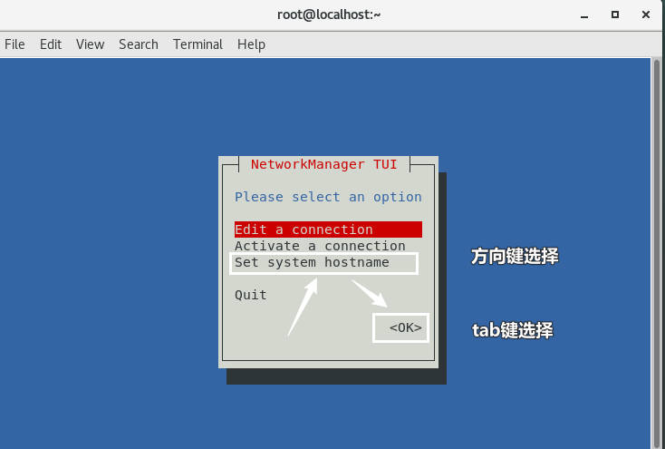
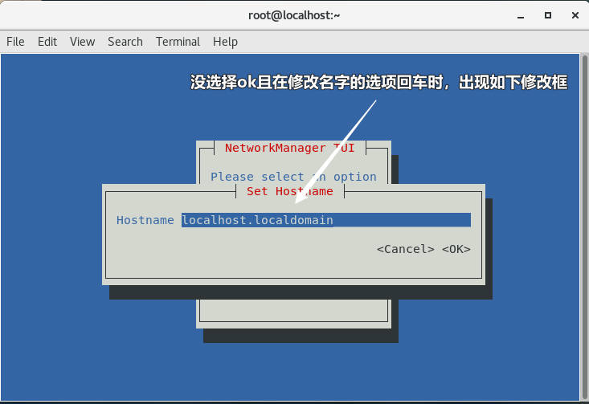
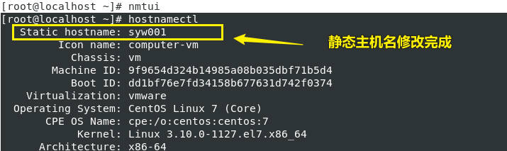
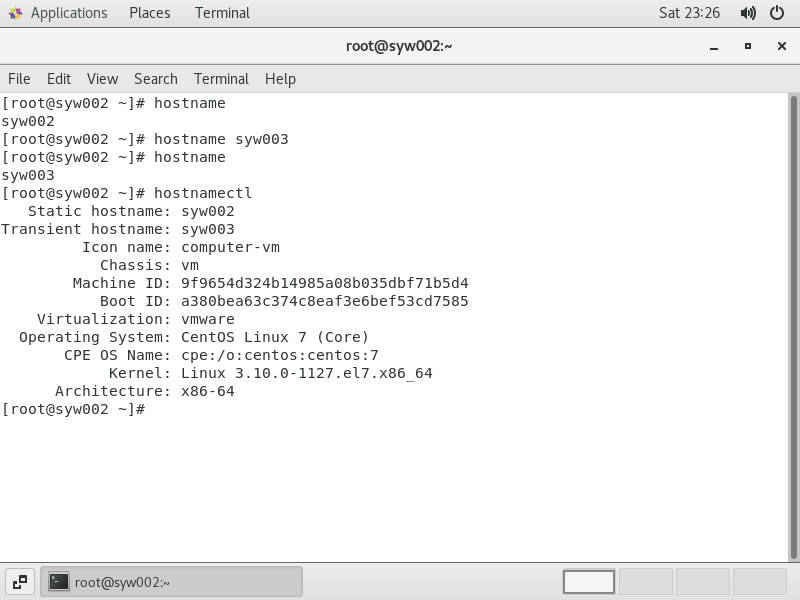
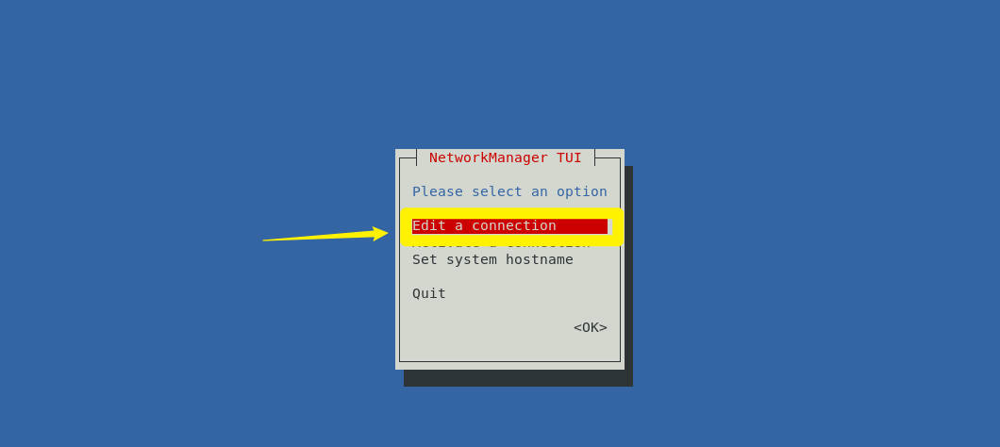
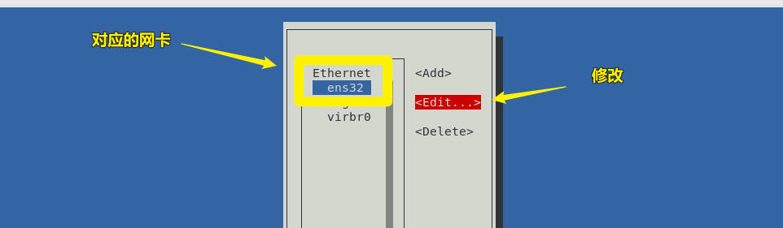
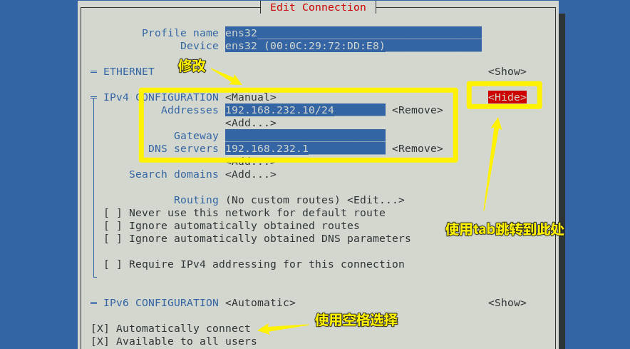

Linux服务配置-学习日志-001
下面是关于Linux 服务配置教程的学习日志
主机名
主机名在同一网络中是唯一的，且主机名分为三种形式（CentOS 7）：
- 静态的（Static） ：“静态”主机名也称为内核主机名，是系统在启动时从/etc/hostname自动初始化的主机名。
- 瞬态的（Transient） ：“瞬态”主机名是在系统运行时临时分配的主机名，由内核管理。
例如，通过 DHCP 或 DNS 服务器分配的 localhost 就是这种形式的主机名。 - 灵活的（Pretty） ：“灵活”主机名是 UTF8 格式的自由主机名，以展示给终端用户。
查看当前主机名
简单查询当前静态主机名 |
配置主机名
编辑主机名文件修改(静态)
[root@localhost ~] # vi /etc/hostname |
Network Manager TUI修改(静态)
[root@localhost ~] # nmtui |


后面只需回车点OK就修改完成了。

hostnamectl修改(静态)
hostnamectl参数说明
| 选项 | 含义 |
|---|---|
| -H –host=[USER@]HOST | 操作远程主机 |
| status | 查看当前主机名(和直接使用hostnamectl一样的效果) |
| set-hostname | 设置主机名 |
| set-icon-name | 为主机设置图标名称 |
| set-chassis | 为主机设置机箱类型 |
| set-deployment | 为主机设置部署环境 |
| set-location | 为主机设置位置 |
只需要下面一行即可修改主机名(静态)为syw002
hostnamectl set-hostname syw002 |
hostname修改主机名(瞬态)

网卡配置文件
在配置网卡前，请先确保同一网络段内宿主机的网卡IP地址不会与虚拟机的网卡IP地址冲突。
宿主机命令行输入ipconfig查看网卡IP地址即可。
[root@localhost /]# ls //etc/sysconfig/network-scripts/ifcfg* #查看当前的网卡有多少个 |
到网卡配置文件修改
当 BOOTPROTO=none 时，需要配置以下参数：
ONBOOT=yes # 是否要设置为开机启动 |
Network Manager TUI修改
具体看下图：



nmcli
子命令功能
参照书上：
| 子命令 | 功能 |
|---|---|
| nmcli connection add help | 查看帮助 |
| nmcli connection reload | 重新加载配置 |
| nmcli connection show | 显示所有连接 |
| nmcli connection show “ensXX” | 显示连接 ensXX |
| nmcli connection show –active | 显示所有活动的连接状态 |
| nmcli connection up con-XX | 启用 con-XX 的配置 |
| nmcli connection down con-XX | 禁用 con-XX 的配置，注意一个网卡可以有多个配置 |
| nmeli device connect ensXX | 启用网卡 ensXX |
| nmcli device disconneet ensXX | 禁用网卡 ensXX |
| nmcli device show ensXX | 显示网卡 ensXX |
| nmcli device status | 显示设备状态 |
// 下面时修改关网卡的部分 |
常用选项含义表
| 选项 | 含义 |
|---|---|
| con-name | 指定连接名字,没有特殊要求,建议使用英文和数字,中间不要有空格 |
| ipv4.method | 指定获取 IP 地址的方式 |
| ifname | 指定网卡设备名 |
| autoconnect | 指定是否自动启动 |
| gw4 | 指定IPv4 网关 |
nmcli命令选项参数和网卡配置文件字段的对应关系
| nmcli命令选项参数 | 网卡配置文件字段 |
|---|---|
| ipv4.method manual/auto | BOOTPROTO=none/dhcp |
| connection.id ensXX | NAME= ensXX |
| connection.interface-name ensXX | DEVICE=ensXX |
| conneetion.autoconnect yes | ONBOOT=yes |
| ipv4.addresses 192,168.0.1/24 | IPADDR=192.168.0.1 PREFIX-24 |
| gw4 192.168.0.254 | GATEWAY=192.168.0.254 |
| ipv4.dns 8.8.8.8 | DNS1=8.8.8.8 |
| ipv4.dns-search example.com | DOMAIN=example.com |
| ipy4.ignore-auto-dns true | PEERDNS= no |
| 802-3-ethernet.mac-address… | HWADDR=… |
本博客所有文章除特别声明外，均采用 CC BY-NC-SA 4.0 许可协议。转载请注明来自 矢幽武博客！
 wechat
wechat alipay
alipay
相关推荐


评论
公告
威 武 不 屈 ,成 为 自 己 不败的 信条, 剑 走 偏 锋 ,缥 缈 孤 鸿 影 --孤志

微信号：无
QQ：无
--------------------------------每日更新指南：
刷题/记录总知识一般会沿用上次的文档
学习新知将新开文档